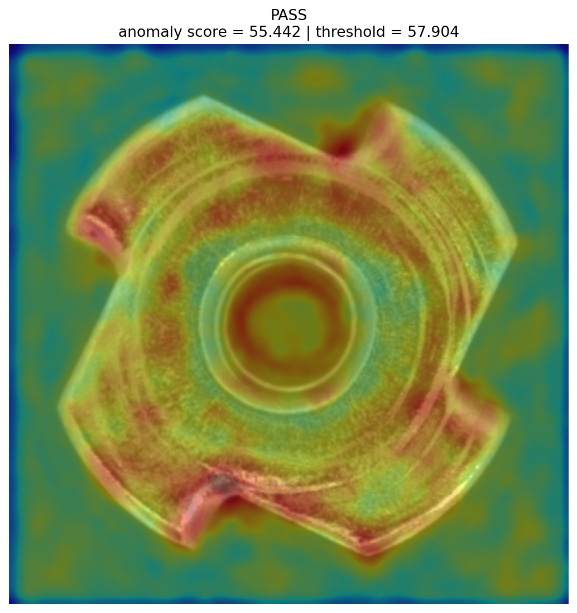
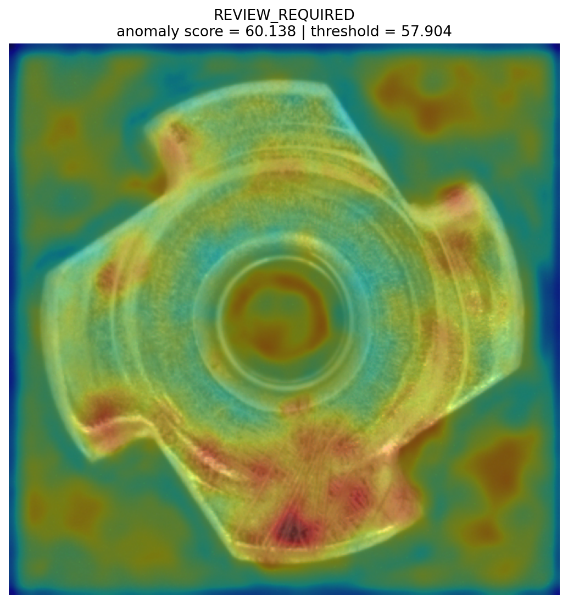

Supplier · good/000
—
scaled anomaly score
Supplier와 Buyer의 검사 결과가 충돌하면 Escrow를 잠그고, Independent Replay는 실행 일관성만 확인합니다. 최종 정산은 권한이 분리된 Inspector가 결정하며, Smart Contract는 그 절차와 자금 이동을 강제합니다.
최종 E2E JSON Sepolia Contract지갑 연결 후 “온체인 최종상태 재검증”을 누르면 현재 Sepolia 상태를 다시 읽습니다.
동일한 frozen model/policy/threshold를 사용하고 Contract가 score와 threshold를 비교해 PASS/REVIEW를 파생합니다.


아래는 기존 Sepolia PATCH2 거래를 꾸미는 장면이 아니라, 멘토 피드백 이후 별도 PATCH3 candidate를 로컬 Anvil/CI에서 공격한 결과입니다. PATCH3는 아직 Sepolia에 배포되지 않았습니다.
아래 콘솔은 신규 테스트 거래나 attestation 제출을 위한 운영 도구입니다. 완료된 E2E 거래에는 추가 write transaction을 보내지 마세요.
조회 결과가 여기에 표시됩니다.
검사·replay·판정 데이터를 확인한 서명자가 서명합니다.
서명 결과
Station 서명 파일을 Actor 지갑에서 불러와 제출합니다.
발신자 · 함수 · 금액 · calldata · 현재 상태
2 confirmations 이후 receipt·이벤트·상태·회계 기록을 저장합니다.
아직 이 세션에서 실행된 거래가 없습니다.
컨트랙트는 합의된 해시·권한·상태·자금을 검증합니다. 실물 동일성이나 AI 정확성 자체를 블록체인이 증명한다고 주장하지 않습니다.